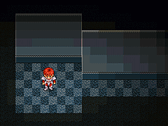
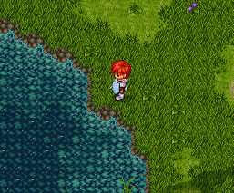
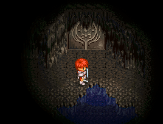
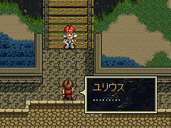
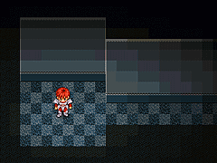

一度ゲームをクリアした後で、草原にいるピッガードにやられます。そして、ゲームオーバーの画面で「Y」と「S」キーを押しながら「コンティニュー」を選ぶと、イース開発室へ行くことできます。
イース開発室では開発スタッフが色々なことを教えてくれるはずです。

目次 > ゲームについて > 日本Falcom 攻略 > Ys > 情報
らんの眼
Ys(イース) Ys Eternal(VE)/Ys Complete
| 概要 | 情報 | ボス戦 |
| 敵キャラ一覧 | アイテム一覧 | 攻略チャート |
| 地図 | ダウンロード | イースの本 |
| 経験値表 | 地名一覧 | タイムアタック |
| ETERNAL / Complete 比較 | キャラクター一覧 | |
| Ys 攻略へ | 目次へ戻る |
| [ 1 ] [ 2 ] [ 3 ] [ 4 ] [ 5 ] [ 6 ] [ 7 ] [ 8 ] [ 9 ] |
| 「金の台座」の場所 |
| 金の台座は下の画像の位置にあります。この画像はETERNAL 版のものであり、Complete
では池に「金の台座」が沈んでいるのが確認できます。  |
| ラスティン廃坑の安全地帯 |
| 下の画像の位置、廃坑のB2 (Level
3)の扉付近は、なぜかモンスターが近寄ってきません。B2 で回復をするのならばここが一番安全でしょう。  |
| 武器をほめてもらえる |
| スラフからSHORT SWORD をもらい、これを装備した状態でミネアの町のロッゼイ(武器屋のおじさん)に話し掛けると、SHORT SWORD の手入れの良さをほめてくれます。 |
| 急ぐな |
| バルバドの村から離れ、ミネアの町へ行かずに、ゼピック村へ向かおうとすると、ミネアの町人がアドルを呼び止めます。 どうやら、アドルを子どもと間違えたようです。  |
| CD を入れずに起動する方法 |
| これはラップトップのためディスクの携帯が難しい、ディスクに傷を付けたくないといった方のために掲載しています。決して第三者への貸与のために使用しないでください。 1.仮想CD ドライブ作製ソフトをインストールする。 2.ディスク内の以下のファイルを、仮想CD ドライブソフト専用ファイルに変換。 (YS ETERNAL の場合) YS1.ICO SETUP.EXE YSFONT.EXE AUTORUN.INF FALCOM.INF UNINST.INF DSETUP.DLL DSETUP16.DLL DSETUP32.DLL SETUP.BMP (ファイル名を「YS1_WIN」とする) (Ys I・II Complete の場合) YS_WIN.CD2 YSE.ICO FSETUP.EXE AUTORUN.INF FALCOM.INF INST.BMP SETUP.BMP (ファイル名を「YSE_CD2」とする) (拡張子が表示されない場合もあります) (大文字、小文字は場合によって変わる可能性があります) |
| イース開発室へ行く |
| これはYs ETERNAL のみの裏技で、Complete
では使えません。 一度ゲームをクリアした後で、草原にいるピッガードにやられます。そして、ゲームオーバーの画面で「Y」と「S」キーを押しながら「コンティニュー」を選ぶと、イース開発室へ行くことできます。 イース開発室では開発スタッフが色々なことを教えてくれるはずです。  |
| [ 1 ] [ 2 ] [ 3 ] [ 4 ] [ 5 ] [ 6 ] [ 7 ] [ 8 ] [ 9 ] |
| 概要 | 情報 | ボス戦 |
| 敵キャラ一覧 | アイテム一覧 | 攻略チャート |
| 地図 | ダウンロード | イースの本 |
| 経験値表 | 地名一覧 | タイムアタック |
| ETERNAL / Complete 比較 | キャラクター一覧 | |
| ページ上部へ | Ys 攻略へ | 目次へ戻る |